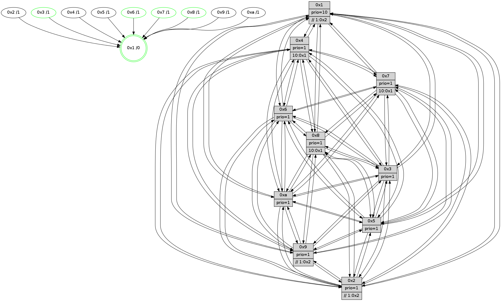

>> << IDX [start] -100 -25 -5 +0 +5 +25 +100 [960.372116089]
 Previous packets
----------------------------------------------------------------------
955.643334 beacon01(faad) #0 coord=01,02,03,04,05,06,07,0a,09,08 cycle=688.0ms assoc
-- color-indic=1 64 73 ea
955.653315 beacon02(faad) #0 coord=01,02,03,04,05,06,07,0a,09,08 cycle=688.0ms assoc 64 e0 db
955.663317 beacon03(faad) #0 coord=01,02,03,04,05,06,07,0a,09,08 cycle=688.0ms assoc 64 9a 96
955.673316 beacon04(faad) #0 coord=01,02,03,04,05,06,07,0a,09,08 cycle=688.0ms assoc 64 ed 7c
955.683317 beacon05(faad) #0 coord=01,02,03,04,05,06,07,0a,09,08 cycle=688.0ms assoc 64 97 31
955.693317 beacon06(faad) #0 coord=01,02,03,04,05,06,07,0a,09,08 cycle=688.0ms assoc 64 19 e6
955.703317 beacon07(faad) #0 coord=01,02,03,04,05,06,07,0a,09,08 cycle=688.0ms assoc 64 63 ab
955.713322 beacon0a(faad) #0 coord=01,02,03,04,05,06,07,0a,09,08 cycle=688.0ms assoc 64 12 a0
955.723321 beacon09(faad) #0 coord=01,02,03,04,05,06,07,0a,09,08 cycle=688.0ms assoc 64 9c 77
955.733323 beacon08(faad) #0 coord=01,02,03,04,05,06,07,0a,09,08 cycle=688.0ms assoc 64 e6 3a
955.745034 [Hello(3): seq=611 sym=1,7,6,2,4,8,9,10,5 sysInfo= stat=1:2,6,7,0/7:13,7,7,7/6:8,11,11,2/2:6,0,11,9/4:9,1,14,6/8:1,14,7,1/9:4,0,9,10/10:12,4,9,2/5:13,8,4,10]
955.747920 [Hello(1): seq=520 sym=4,2,9,5,10,3,8,6,7 sysInfo=coloring-mode-on,ColoringModeRequestCalled stat=4:0,8,15,1/2:0,1,13,11/9:14,6,14,5/5:10,1,4,4/10:15,8,11,2/3:15,0,11,2/8:1,1,6,0/6:13,0,10,10/7:11,4,12,11]
955.751281 [Hello(6): seq=611 sym=2,3,5,4,7,9,8,10,1 sysInfo= stat=2:1,2,0,0/3:7,11,0,9/5:2,7,13,12/4:6,8,6,1/7:5,4,13,5/9:13,8,14,4/8:2,5,11,1/10:4,15,5,10/1:5,1,12,1]
955.754200 [STC(3)->1 #0.127 tree-change,inconsistent-stability,to-color d=1]
955.756215 [Hello(2): seq=607 sym=4,5,7,6,3,9,8,10,1 sysInfo=hasWarning stat=4:0,1,5,5/5:11,3,4,0/7:15,5,2,9/6:14,9,10,8/3:12,15,8,5/9:13,7,11,4/8:3,0,7,8/10:2,3,12,9/1:2,11,14,1]
955.759359 [Color(6) seq=243 @0:0 prio=1]
955.763710 [Hello(5): seq=611 sym=7,6,4,3,1,9,8,10,2 sysInfo=hasWarning stat=7:8,4,2,8/6:3,4,2,0/4:7,2,15,7/3:15,5,8,9/1:4,13,0,1/9:2,12,13,4/8:5,14,11,8/10:1,0,8,4/2:1,5,0,0]
955.766861 [Color(5) seq=264 @0:0 prio=1]
955.770650 [Color(2) seq=256 @0:0 prio=1 >>1.@2,1.@3,1.@5]
----------------------------------------------------------------------
956.431463 beacon01(faad) #0 coord=01,02,03,04,05,06,07,0a,09,08 cycle=688.0ms assoc
-- color-indic=1 64 cf ef
956.441444 beacon02(faad) #0 coord=01,02,03,04,05,06,07,0a,09,08 cycle=688.0ms assoc 64 5c de
956.451445 beacon03(faad) #0 coord=01,02,03,04,05,06,07,0a,09,08 cycle=688.0ms assoc 64 26 93
956.461447 beacon04(faad) #0 coord=01,02,03,04,05,06,07,0a,09,08 cycle=688.0ms assoc 64 51 79
956.471447 beacon05(faad) #0 coord=01,02,03,04,05,06,07,0a,09,08 cycle=688.0ms assoc 64 2b 34
956.481449 beacon06(faad) #0 coord=01,02,03,04,05,06,07,0a,09,08 cycle=688.0ms assoc 64 a5 e3
956.491448 beacon07(faad) #0 coord=01,02,03,04,05,06,07,0a,09,08 cycle=688.0ms assoc 64 df ae
956.501450 beacon0a(faad) #0 coord=01,02,03,04,05,06,07,0a,09,08 cycle=688.0ms assoc 64 ae a5
956.511452 beacon09(faad) #0 coord=01,02,03,04,05,06,07,0a,09,08 cycle=688.0ms assoc 64 20 72
956.521451 beacon08(faad) #0 coord=01,02,03,04,05,06,07,0a,09,08 cycle=688.0ms assoc 64 5a 3f
956.532932 [Hello(10): seq=544 sym=6,2,3,8,7,5,9,4,1 sysInfo=hasWarning stat=6:10,4,15,4/2:15,13,11,4/3:8,2,7,7/8:0,9,3,0/7:6,6,0,0/5:12,14,0,11/9:6,4,1,0/4:1,15,5,7/1:8,4,1,1]
956.536278 [Hello(8): seq=555 sym=5,2,3,4,9,6,7,10,1 sysInfo=hasWarning stat=5:10,2,1,11/2:9,14,12,4/3:12,15,13,11/4:9,12,11,7/9:6,3,1,0/6:13,2,10,10/7:5,5,1,0/10:4,5,5,0/1:14,7,12,0]
956.539281 [Hello(7): seq=611 sym=2,3,5,6,4,8,9,10,1 sysInfo=hasWarning stat=2:6,14,8,12/3:5,12,1,11/5:8,13,4,14/6:4,9,1,6/4:4,0,15,1/8:10,6,2,0/9:6,2,1,0/10:6,9,7,1/1:6,1,13,0]
956.544221 [Color(1) seq=292 @0:0 prio=10 >>1.@2,1.@3,1.@5]
956.545821 [Hello(9): seq=555 sym=2,5,3,4,7,6,8,10,1 sysInfo=hasWarning stat=2:8,5,12,2/5:10,4,9,2/3:7,10,10,11/4:8,0,8,7/7:10,14,12,8/6:8,2,2,8/8:8,4,13,1/10:0,0,1,0/1:1,5,0,1]
956.550623 [Hello(4): seq=611 sym=5,7,6,2,3,9,8,10,1 sysInfo= stat=5:3,3,12,10/7:10,9,14,6/6:15,7,10,9/2:4,3,6,9/3:11,9,9,7/9:11,4,1,7/8:6,2,2,1/10:11,10,4,9/1:14,11,15,1]
----------------------------------------------------------------------
957.219595 beacon01(faad) #0 coord=01,02,03,04,05,06,07,0a,09,08 cycle=688.0ms assoc
-- color-indic=1 64 db 81
957.229577 beacon02(faad) #0 coord=01,02,03,04,05,06,07,0a,09,08 cycle=688.0ms assoc 64 48 b0
957.239577 beacon03(faad) #0 coord=01,02,03,04,05,06,07,0a,09,08 cycle=688.0ms assoc 64 32 fd
957.249577 beacon04(faad) #0 coord=01,02,03,04,05,06,07,0a,09,08 cycle=688.0ms assoc 64 45 17
957.259577 beacon05(faad) #0 coord=01,02,03,04,05,06,07,0a,09,08 cycle=688.0ms assoc 64 3f 5a
957.269576 beacon06(faad) #0 coord=01,02,03,04,05,06,07,0a,09,08 cycle=688.0ms assoc 64 b1 8d
957.279578 beacon07(faad) #0 coord=01,02,03,04,05,06,07,0a,09,08 cycle=688.0ms assoc 64 cb c0
957.289584 beacon0a(faad) #0 coord=01,02,03,04,05,06,07,0a,09,08 cycle=688.0ms assoc 64 ba cb
957.299584 beacon09(faad) #0 coord=01,02,03,04,05,06,07,0a,09,08 cycle=688.0ms assoc 64 34 1c
957.309583 beacon08(faad) #0 coord=01,02,03,04,05,06,07,0a,09,08 cycle=688.0ms assoc 64 4e 51
957.320534 [Hello(1): seq=521 sym=4,2,9,5,10,3,8,6,7 sysInfo=coloring-mode-on,ColoringModeRequestCalled stat=4:1,8,15,1/2:1,2,13,11/9:15,6,14,5/5:11,2,4,4/10:0,8,11,2/3:15,0,12,2/8:1,1,6,0/6:14,1,10,10/7:11,4,12,11]
957.324600 [Hello(6): seq=612 sym=2,3,5,4,7,9,8,10,1 sysInfo= stat=2:1,3,0,0/3:8,11,0,9/5:3,8,13,12/4:7,8,6,1/7:6,4,13,5/9:14,8,14,4/8:3,5,11,1/10:5,15,5,10/1:6,2,12,1]
957.329239 [Hello(2): seq=608 sym=4,5,7,6,3,9,8,10,1 sysInfo=hasWarning stat=4:1,1,5,5/5:11,3,4,0/7:0,5,2,9/6:14,9,10,8/3:13,15,8,5/9:14,7,11,4/8:4,0,7,8/10:3,3,12,9/1:3,12,14,1]
957.331833 [Hello(5): seq=612 sym=7,6,4,3,1,9,8,10,2 sysInfo=hasWarning stat=7:9,4,2,8/6:3,4,2,0/4:8,2,15,7/3:0,5,8,9/1:5,14,0,1/9:3,12,13,4/8:6,14,11,8/10:2,0,8,4/2:1,6,0,0]
957.335389 [Color(2) seq=257 @0:0 prio=1 >>1.@2,1.@3,1.@5]
957.337290 [Hello(3): seq=612 sym=1,7,6,2,4,8,9,10,5 sysInfo= stat=1:2,7,7,0/7:14,7,7,7/6:8,12,11,2/2:7,1,11,9/4:10,1,14,6/8:2,14,7,1/9:5,0,9,10/10:13,4,9,2/5:14,9,4,10]
957.345488 [Color(5) seq=265 @0:0 prio=1]
957.348107 [Color(6) seq=244 @0:0 prio=1]
----------------------------------------------------------------------
958.007725 beacon01(faad) #0 coord=01,02,03,04,05,06,07,0a,09,08 cycle=688.0ms assoc
-- color-indic=1 64 67 84
958.017708 beacon02(faad) #0 coord=01,02,03,04,05,06,07,0a,09,08 cycle=688.0ms assoc 64 f4 b5
958.027708 beacon03(faad) #0 coord=01,02,03,04,05,06,07,0a,09,08 cycle=688.0ms assoc 64 8e f8
958.037707 beacon04(faad) #0 coord=01,02,03,04,05,06,07,0a,09,08 cycle=688.0ms assoc 64 f9 12
958.047707 beacon05(faad) #0 coord=01,02,03,04,05,06,07,0a,09,08 cycle=688.0ms assoc 64 83 5f
958.057708 beacon06(faad) #0 coord=01,02,03,04,05,06,07,0a,09,08 cycle=688.0ms assoc 64 0d 88
958.067709 beacon07(faad) #0 coord=01,02,03,04,05,06,07,0a,09,08 cycle=688.0ms assoc 64 77 c5
958.077713 beacon0a(faad) #0 coord=01,02,03,04,05,06,07,0a,09,08 cycle=688.0ms assoc 64 06 ce
958.087713 beacon09(faad) #0 coord=01,02,03,04,05,06,07,0a,09,08 cycle=688.0ms assoc 64 88 19
958.097714 beacon08(faad) #0 coord=01,02,03,04,05,06,07,0a,09,08 cycle=688.0ms assoc 64 f2 54
958.112558 [Color(1) seq=293 @0:0 prio=10 >>1.@2,1.@3,1.@5]
958.115518 [Hello(7): seq=612 sym=2,3,5,6,4,8,9,10,1 sysInfo=hasWarning stat=2:7,15,8,12/3:6,12,1,11/5:9,14,4,14/6:5,10,1,6/4:5,0,15,1/8:10,6,2,0/9:7,2,1,0/10:6,9,7,1/1:7,2,13,0]
958.119013 [Hello(8): seq=556 sym=5,2,3,4,9,6,7,10,1 sysInfo=hasWarning stat=5:11,3,1,11/2:10,15,12,4/3:13,15,13,11/4:10,12,11,7/9:7,3,1,0/6:14,3,10,10/7:6,5,1,0/10:4,5,5,0/1:15,8,12,0]
958.121631 [Hello(10): seq=545 sym=6,2,3,8,7,5,9,4,1 sysInfo=hasWarning stat=6:11,5,15,4/2:0,14,11,4/3:9,2,7,7/8:1,9,3,0/7:7,6,0,0/5:13,15,0,11/9:7,4,1,0/4:2,15,5,7/1:9,5,1,1]
----------------------------------------------------------------------
958.795854 beacon01(faad) #0 coord=01,02,03,04,05,06,07,0a,09,08 cycle=688.0ms assoc
-- color-indic=1 64 a3 8a
958.805837 beacon02(faad) #0 coord=01,02,03,04,05,06,07,0a,09,08 cycle=688.0ms assoc 64 30 bb
958.815837 beacon03(faad) #0 coord=01,02,03,04,05,06,07,0a,09,08 cycle=688.0ms assoc 64 4a f6
958.825836 beacon04(faad) #0 coord=01,02,03,04,05,06,07,0a,09,08 cycle=688.0ms assoc 64 3d 1c
958.835837 beacon05(faad) #0 coord=01,02,03,04,05,06,07,0a,09,08 cycle=688.0ms assoc 64 47 51
958.845837 beacon06(faad) #0 coord=01,02,03,04,05,06,07,0a,09,08 cycle=688.0ms assoc 64 c9 86
958.855838 beacon07(faad) #0 coord=01,02,03,04,05,06,07,0a,09,08 cycle=688.0ms assoc 64 b3 cb
958.865843 beacon0a(faad) #0 coord=01,02,03,04,05,06,07,0a,09,08 cycle=688.0ms assoc 64 c2 c0
958.875842 beacon09(faad) #0 coord=01,02,03,04,05,06,07,0a,09,08 cycle=688.0ms assoc 64 4c 17
958.885844 beacon08(faad) #0 coord=01,02,03,04,05,06,07,0a,09,08 cycle=688.0ms assoc 64 36 5a
958.898948 [Hello(3): seq=613 sym=1,7,6,2,4,8,9,10,5 sysInfo= stat=1:2,8,7,0/7:15,7,7,7/6:8,13,11,2/2:7,1,11,9/4:10,1,14,6/8:3,14,7,1/9:6,0,9,10/10:14,4,9,2/5:14,10,4,10]
958.901495 [Hello(1): seq=522 sym=4,2,9,5,10,3,8,6,7 sysInfo=coloring-mode-on,ColoringModeRequestCalled stat=4:1,8,15,1/2:2,3,13,11/9:0,6,14,5/5:12,3,4,4/10:1,8,11,2/3:0,0,12,2/8:2,1,6,0/6:15,2,10,10/7:12,4,12,11]
958.906286 [Hello(2): seq=609 sym=4,5,7,6,3,9,8,10,1 sysInfo=hasWarning stat=4:2,1,5,5/5:11,4,4,0/7:1,5,2,9/6:15,10,10,8/3:14,15,8,5/9:14,7,11,4/8:5,0,7,8/10:4,3,12,9/1:4,13,14,1]
958.910259 [Hello(6): seq=613 sym=2,3,5,4,7,9,8,10,1 sysInfo= stat=2:1,3,0,0/3:8,11,0,9/5:3,8,13,12/4:8,8,6,1/7:7,4,13,5/9:14,8,14,4/8:4,5,11,1/10:6,15,5,10/1:7,3,12,1]
958.912903 [Color(2) seq=258 @0:0 prio=1 >>1.@2,1.@3,1.@5]
958.915146 [Color(6) seq=245 @0:0 prio=1]
958.916617 [Hello(5): seq=613 sym=7,6,4,3,1,9,8,10,2 sysInfo=hasWarning stat=7:10,4,2,8/6:3,5,2,0/4:8,2,15,7/3:0,5,8,9/1:6,15,0,1/9:4,12,13,4/8:7,14,11,8/10:3,0,8,4/2:1,6,0,0]
958.921023 [Color(5) seq=266 @0:0 prio=1]
958.923279 [STC(1) #0.128 tree-change,inconsistent-stability,stable,to-color d=0]
----------------------------------------------------------------------
959.583984 beacon01(faad) #0 coord=01,02,03,04,05,06,07,0a,09,08 cycle=688.0ms assoc
-- color-indic=1 64 1f 8f
959.593966 beacon02(faad) #0 coord=01,02,03,04,05,06,07,0a,09,08 cycle=688.0ms assoc 64 8c be
959.603966 beacon03(faad) #0 coord=01,02,03,04,05,06,07,0a,09,08 cycle=688.0ms assoc 64 f6 f3
959.613967 beacon04(faad) #0 coord=01,02,03,04,05,06,07,0a,09,08 cycle=688.0ms assoc 64 81 19
959.623967 beacon05(faad) #0 coord=01,02,03,04,05,06,07,0a,09,08 cycle=688.0ms assoc 64 fb 54
959.633966 beacon06(faad) #0 coord=01,02,03,04,05,06,07,0a,09,08 cycle=688.0ms assoc 64 75 83
959.643968 beacon07(faad) #0 coord=01,02,03,04,05,06,07,0a,09,08 cycle=688.0ms assoc 64 0f ce
959.653972 beacon0a(faad) #0 coord=01,02,03,04,05,06,07,0a,09,08 cycle=688.0ms assoc 64 7e c5
959.663972 beacon09(faad) #0 coord=01,02,03,04,05,06,07,0a,09,08 cycle=688.0ms assoc 64 f0 12
959.673972 beacon08(faad) #0 coord=01,02,03,04,05,06,07,0a,09,08 cycle=688.0ms assoc 64 8a 5f
959.685525 [STC(5)->1 #0.128 to-color d=1]
959.686983 [Hello(4): seq=613 sym=5,7,6,2,3,9,8,10,1 sysInfo= stat=5:5,5,12,10/7:11,9,14,6/6:1,9,10,9/2:6,5,6,9/3:13,9,9,7/9:11,4,1,7/8:7,2,2,1/10:12,10,4,9/1:0,12,0,1]
959.689653 [Hello(9): seq=557 sym=2,5,3,4,7,6,8,10,1 sysInfo=hasWarning stat=2:10,7,12,2/5:12,6,9,2/3:9,10,10,11/4:9,0,8,7/7:11,14,12,8/6:10,4,2,8/8:9,4,13,1/10:1,0,1,0/1:3,6,1,1]
959.692493 [STC(9)->1 #0.128 tree-change,inconsistent-stability,to-color d=1]
959.694180 [STC(6)->1 #0.128 tree-change,inconsistent-stability,stable,to-color d=1]
959.696375 [Color(1) seq=294 @0:0 prio=10 >>1.@2,1.@3,1.@5]
959.698125 [Hello(10): seq=546 sym=6,2,3,8,7,5,9,4,1 sysInfo=hasWarning stat=6:12,6,15,4/2:1,15,11,4/3:10,2,7,7/8:1,9,3,0/7:7,6,0,0/5:14,0,0,11/9:7,4,1,0/4:2,15,5,7/1:10,5,2,1]
959.701582 [STC(10)->1 #0.128 tree-change,inconsistent-stability,to-color d=1]
959.704989 [STC(8)->1 #0.128 tree-change,inconsistent-stability,stable,to-color d=1]
959.708543 [TreeStatus(8)-.->1 #0.128 tree-change,inconsistent-stability,stable child=1]
959.710484 [Hello(7): seq=613 sym=2,3,5,6,4,8,9,10,1 sysInfo=hasWarning stat=2:8,0,8,12/3:7,12,1,11/5:10,15,4,14/6:6,11,1,6/4:5,0,15,1/8:11,6,2,0/9:7,2,1,0/10:7,9,7,1/1:8,2,14,0]
959.715242 [STC(7)->1 #0.128 tree-change,inconsistent-stability,stable,to-color d=1]
959.717794 [STC(3)->1 #0.128 tree-change,inconsistent-stability,stable,to-color d=1]
959.719124 [TreeStatus(7)-.->1 #0.128 tree-change,inconsistent-stability,stable child=1]
959.720371 [TreeStatus(3)-.->1 #0.128 tree-change,inconsistent-stability,stable child=1]
959.722399 [STC(2)->1 #0.128 to-color d=1]